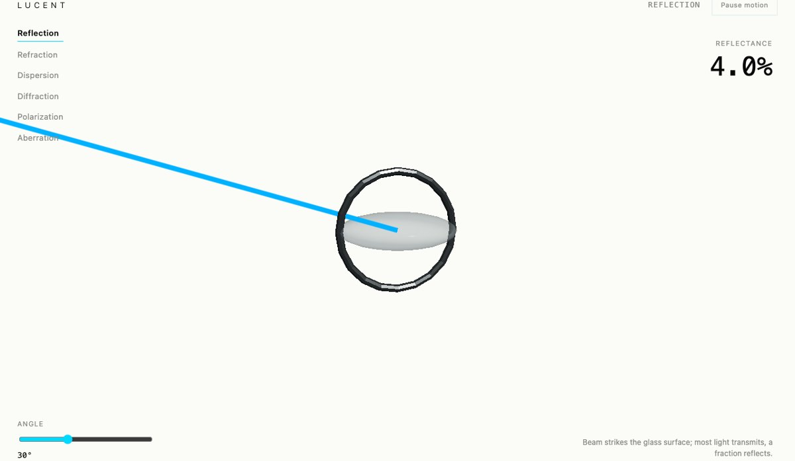
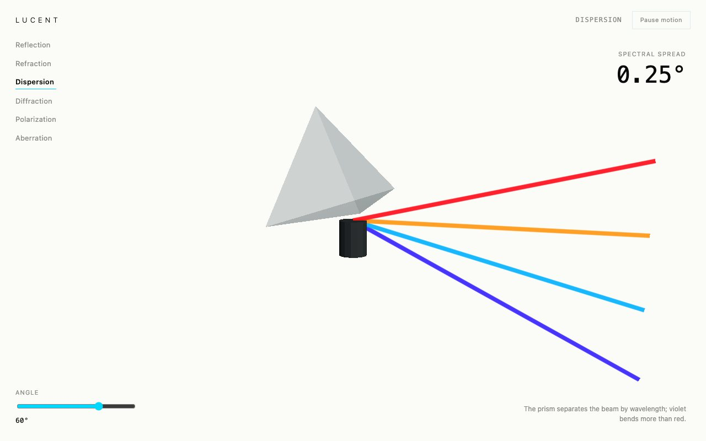
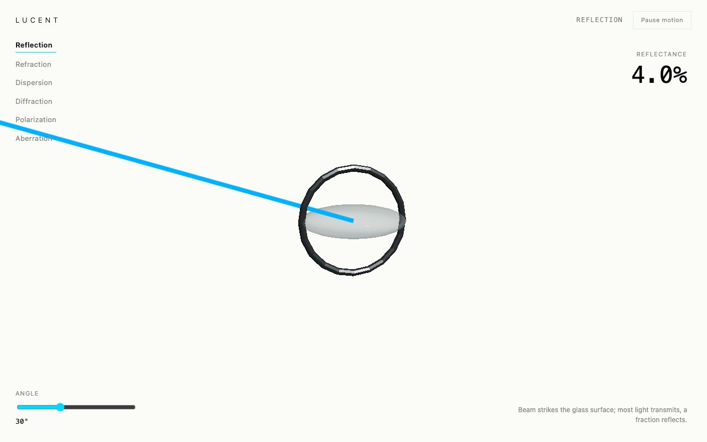

Blender · three.js · motion design · 2026-10
What Breaks When You Put Real Optics Formulas On White?
An interactive optical systems and light design laboratory: six phenomena (reflection, refraction, dispersion, diffraction, polarization, aberration), each driven by a real textbook formula, with zero boxed panels and every measurement floating directly in negative space.

Built from blueprint 07 of a written build book (Advanced Engineering Build Book, Volume VIII) as one vertical slice, using the five-tool-design-pipeline skill: an Awesome Design file for type/spacing scale (the only light-background, no-panel treatment in the volume), the Taste/Impeccable checklist, Playwright including a beam pixel-sample check, Three.js as the product. Every number is a real (simplified) optics formula: Schlick's approximation, Snell's law, the single-slit diffraction equation and Malus's law, not invented curves. Not built: a literal ray tracer, render-target-based refraction, auth.
01 — The problem
The book's rule for this blueprint is explicit and unusual among the ten: avoid conventional panels, let negative space carry the design, and let light itself be the interface. That rules out the bordered-panel pattern every other blueprint in the volume uses, and it means the measurements shown have to be real formulas, since a lab with fabricated numbers would contradict its own premise.
02 — What I built
One repository with the whole pipeline.
- A scripted asset:
model/build.pybuilds a glass prism and a lens, exports GLBs, renders a poster. - A domain model: Schlick's Fresnel-reflectance approximation, Snell's law (with total-internal-reflection detection), a prism-dispersion spread, the single-slit diffraction fringe equation, Malus's law, and a simplified spherical-aberration spot size, all pure and unit-tested against known physical behavior (4% reflectance at normal incidence, full Malus transmission at 0 degrees, zero at 90).
- A browser runtime with no `.panel` component at all: every readout is absolutely positioned text over the canvas.
- An intro that enters a beam, disperses it through a prism, follows it through a lens to a focal point, and hands off through a light mask.
- Fallbacks: poster for no WebGL, static keyframes for reduced motion.
03 — How it was built
- 01
Real formulas, not a demo curve
Reflectance at normal incidence comes out to 4.0%, which is the textbook value for glass (n=1.5) via Schlick's approximation; Malus's law gives exactly 50% transmission at 45 degrees and 0% at 90. These are checked against known physical values in the unit tests, not just asserted against themselves.
export function malusTransmission(angleDeg: number): number { return Math.cos(rad(angleDeg)) ** 2; } - 02
Amplify the pixels, never the number
A real prism's spectral spread is a fraction of a degree, invisible at this scene's scale. The rendered fan angle is multiplied by a documented 60x constant purely for legibility; the HUD's reported number is the true, unamplified value. The two are computed from the same function but never share a variable, so the dramatization can never leak into the measurement.
- 03
A blending bug specific to a white background
The dispersion fan and the incident beam both used additive blending, carried over unmodified from the volume's earlier dark-background blueprints. On Optical White, additive blending saturates every beam to white regardless of its real color, so five wavelengths rendered as one white line. Fixed by switching to normal alpha blending and recoloring the generic beam to Prism Cyan. A lesson specific to any future light-background build in this volume.
04 — Results
Dispersion, the fixed spectrum fan:

Reflection, the no-panel layout:

Checks. 14 unit and API tests, 18 Playwright tests including the beam pixel-sample check, clean typecheck.
Performance, SwiftShader (no GPU claim). 7 draw calls, 68 triangles, 565 KB gzipped JS, 1.7 s LCP (the fastest and smallest scene in the volume so far). Median 16.7 ms per frame.
05 — What I'd do next
- Measure on a physical GPU and a mid-range phone.
- Add a render-target-based refraction pass so the beam visibly bends through the glass material itself, not just as a separate line.
- Apply a documented visual-amplification pattern (amplify pixels, never the number) to any future blueprint with a real-but-tiny effect.